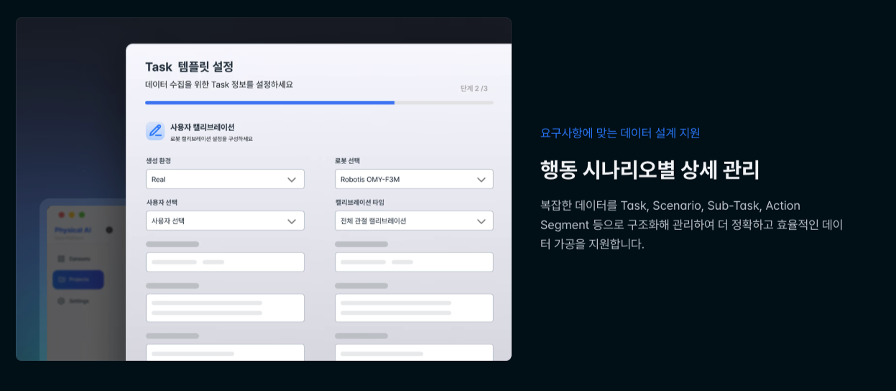

Portfolio case study · Physical AI data operations
Physical AI Data Pipeline
Project Manager · September 2025 – February 2026 · Dahm-won (Abby) Heo
Researchers said review was "impossible." I diagnosed the missing review structure. The fix was a Task/Subtask structure with a staged review workflow built to turn Physical AI data collection into training-readiness decisions.
Physical AI refers to AI models that perceive, decide, and act in the physical world through embodied systems such as robots and autonomous vehicles. This case study focuses on robot manipulation data, meaning robotic-arm work like picking up an object and moving or placing it. Each recorded run, called an episode, combines video, sensor readings, and metadata. The sections below cover the review workflow that makes this multimodal data ready for model training.
Situation
The Ministry of Science and ICT’s Physical AI Leading Technology Development Program is a KRW 34 billion national initiative to develop a Physical AI foundation model. It runs from May 2026 through December 2027, a twenty-month push. A consortium formed around the lead research company to compete for it. Within the consortium, the research company owned model development, and two companies handled the data pipeline. Mine was one of them, selected for its track record in large-scale data collection and processing. From the proposal stage, it seconded me and one engineer into the model-development team to support the pipeline from the inside.
This was not a routine data-collection project. The research company knew autonomous-driving data well, yet robot manipulation data for Physical AI had almost no domestic precedent. My company brought pipeline know-how without a ready-made Physical AI protocol. Both organizations were defining the operating model while the government proposal and the project structure were still being shaped.
In that embedded role, I helped define how Physical AI data should move from collection through review into a training-ready dataset. The goal was not simply to increase data volume, but to make sure the researchers’ model-development work could be supported by usable training data.
Diagnosis
In our first meeting, the researchers named review as the immediate blocker, the step they called "impossible" at scale. An auto-QC system was in place, flagging anomalies from sensor data. What it could not do was tell them whether a flagged case was a real problem, or whether the rest of the data was good enough to train on. Only a human reviewing the video could make that call.
Meanwhile the loudest demand across the project was for more data. Teams pushed for more episodes, wider scenarios, faster collection. The two complaints sounded unrelated, yet to me they pointed at the same gap. Review felt impossible for a structural reason. The project lacked an operational review layer to decide what was fit for training, and scaling collection before that layer existed would only pile up episodes with no way of knowing which parts improved the model and which parts degraded it.
Underneath it all sat a granularity problem. Robot manipulation tasks needed to be broken into reviewable subtasks, because a failed episode could still hold usable spans and a completed episode could still be unfit for training. Without defined review units and decision criteria, nobody could say consistently which segments were worth keeping, who owned the call on ambiguous cases, or when a scenario simply needed more data before anyone could judge it at all.
Approach
Task/Subtask structure
To turn the diagnosis into a working model, I first researched how other companies organized similar robot data-collection workflows. The terminology was not yet settled across academia and industry. Labels differed from company to company, yet the underlying intent was similar. Each one broke a full robot run into smaller units that could be reviewed and analyzed more closely.
I summarized that research internally and proposed Task/Subtask as our shared vocabulary. Using the same framing, I sat down with the lead research company's Head Researcher to map the review problem at the task and subtask level. Judging an entire episode as a single pass or fail made it hard to see which part of the robot task broke down, or which failure patterns kept recurring. The same problem applied to knowing how much action data of each type existed in the database.
Under this structure, each episode remained the task-level collection unit, while broken into subtasks for review and analysis. Workers could now receive subtask-level demonstration guides rather than one general instruction per task. Reviewers could pinpoint the exact subtask that failed and pull the usable spans apart from the unusable ones. The data layer, meanwhile, could track action-level coverage instead of treating each episode as one undifferentiated record.
Field benchmarking in China
A second question was whether non-specialist reviewers should be trained to read sensor graphs. I had my doubts. The sensor values that matter shift from task to task, and their meaning depends on what each collection run is trying to capture. Judging that by eye, case after case, seemed unlikely to hold up at scale. Before building the review process around either answer, I wanted to see how a more mature operation handled it.
Domestic competitors were unlikely to open up their internal practices, so I turned to China. I identified several humanoid robotics companies there and helped arrange the meetings. During the trip, we visited a robotics operator's data-collection floor and watched how review work was divided in practice.
The pattern was clear. Reviewers spent their time on video. Sensor graphs were left to auto-QC rather than to the first-pass reviewers, the very split I had suspected would be necessary. That settled the design question. Auto-QC was the right layer for surfacing candidate anomalies, while human review could concentrate on video evidence, task outcome, and escalation. Back home, I shared meeting notes and floor sketches so the team had concrete grounds for a video-centered first-pass model.
Workflow redesign
Drawing on the research and the China trip, I rebuilt the process into staged review. One pass, one verdict gave way to three tiers. Initial Reviewers handled first-pass video review, PMs took the ambiguous cases, and researchers made the hardest calls on training usability.
Machine and human stayed in separate lanes. Auto-QC marked the windows worth a closer look, and from there the reviewers took over. At each stage, reviewers weighed the video and the task outcome, and escalated the case whenever it was too ambiguous or called for more expertise than their role covered. Each stage preserved the prior decision and evidence trail, so later reviewers did not start from zero.
Working from the research and the China trip, I refined the platform mock-up with the engineer from my company. We used it to walk the research company's business lead and Head Researcher through the redesigned workflow.
What Changed
By the end of my secondment, two operating changes had taken hold.
First, Task/Subtask moved past the planning document into how the team worked. It gave everyone a shared way to judge which part of a run succeeded and which part broke down, in place of a single pass/fail record per episode. It also surfaced which failure types kept recurring, useful both for guiding collectors and for shaping what the model learned to imitate.
Second, review stopped being one pass or fail. The platform now runs video-centered first-pass review at the front and sends only the harder cases up to PM or researcher review. Non-specialist reviewers no longer have to read sensor graphs, the piece that had made review feel impossible at scale.
At the program level, the consortium proposal was selected for the KRW 34 billion national program. Of the two companies responsible for the data pipeline, mine was the only one embedded directly with the lead research company’s model-development team.
Framing
This project is where I see the heart of a Deployment Strategist's work, the judgment that turns a vague operating complaint into a structure people can run. The researchers had a real review problem, but the complaint was too broad to act on. What they needed was a way to define review units and to fix who owned a case when the answer was unclear. They also needed decisions about training-readiness to be recorded consistently, so each one stayed on record for later.
My part was to make that structure real. I looked at how comparable robot data-collection teams had solved the same problem, then drew on that work and the China trip to turn Task/Subtask into a video-centered first-pass workflow. That structure did not stop at the planning stage. It shaped the demo platform, and the same logic now runs in the product live on my company's public website.
That is the work I want to keep doing. Taking an operating problem nobody has framed yet, and leaving behind a workflow a team can run without me.

Related Workshop portfolio app
The original project did not use Palantir Foundry. To make the workflow easier to review, I later recreated a sanitized version as a Foundry Workshop portfolio app using demo data.
View the Workshop walkthrough